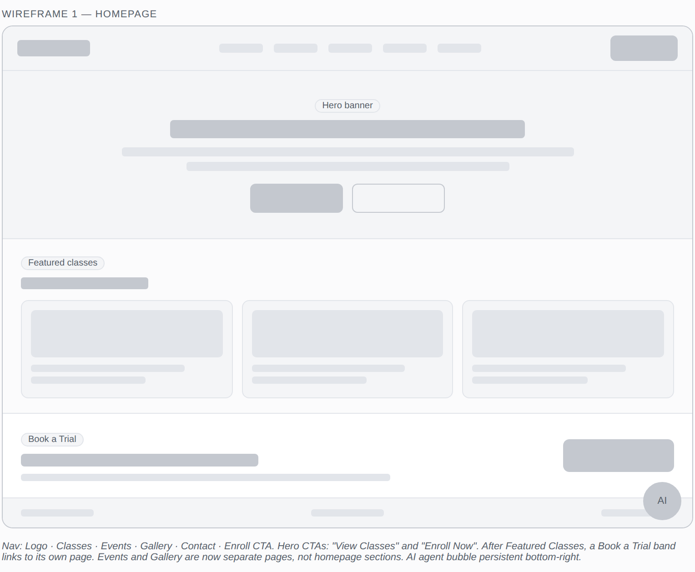
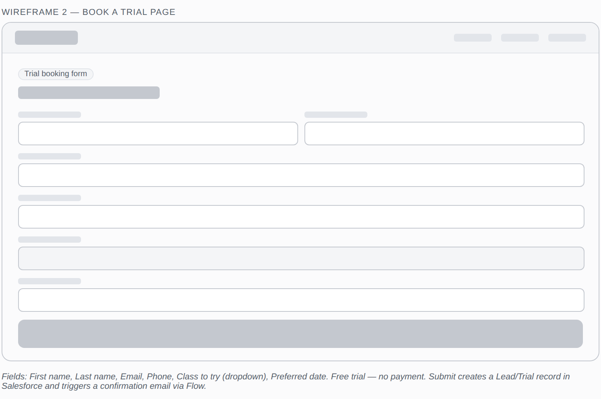
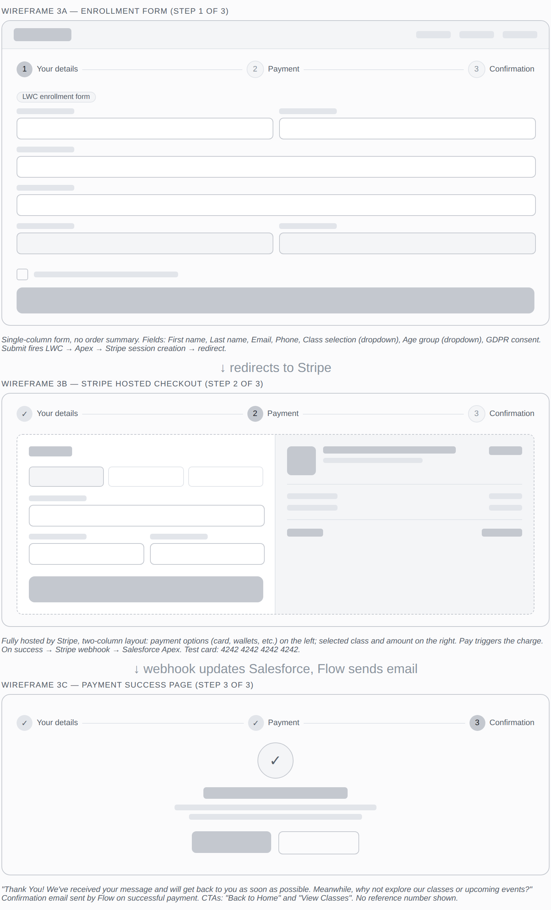

Before I touch Setup on any project, I want to know what the experience is supposed to feel like for the person on the other end. Not in the abstract — concretely: what pages exist, what each page asks the user to do, and how they move from one to the next. For the Sai Dance Academy build, that meant mapping the screens before creating a single object.
I used AI to generate the wireframes so I could spend my time where it mattered most — on the data model, the Stripe integration, and the Agentforce setup. The wireframes were a thinking tool, not the deliverable. Their job was to make sure I knew what should go on each page, what should happen at each step, and how the payment handoff should work — before any of that was built and therefore expensive to change.
I'll also be honest about something most case studies hide: the build drifted from the wireframes. That's not a failure. It's the point. Below I've noted where the live implementation ended up different and why.
The project in one paragraph
The academy needed a way for parents and adult students to enroll in dance classes online and pay in the same sitting, plus a low-commitment way for newcomers to try a class first. On the surface: a public homepage, a trial booking path, an enrollment form, online payment, and automatic confirmation. Underneath: a public-facing Experience Cloud site, Lightning Web Components, Apex, Stripe Checkout, webhooks, and Flow. The wireframes were how I made sure all of that stayed in service of a clear, navigable experience.
Wireframe 1 — The homepage
The homepage carries a nav bar, a hero with two calls to action, a row of featured classes, a Book a Trial band, a footer, and a persistent AI agent bubble in the bottom-right corner.

Homepage layout — two hero CTAs, featured classes, Book a Trial band, persistent agent
The decisions baked into this layout:
Dance_Class__c object with a boolean flag for what's promoted. Drawing the homepage forced me to define that field before I built the object — not discover it was missing halfway through.An early version put an events listing and a gallery preview directly on the homepage. I moved both to their own dedicated pages and replaced that space with a Book a Trial band instead. A homepage should drive one primary action — for a dance academy chasing new students, "try a class" converts better than "scroll our gallery." Events and gallery are still one nav click away for the people who want them; they just no longer compete with the main conversion path.
Wireframe 2 — Book a Trial
Book a Trial is its own page with a short form: name, contact details, which class they'd like to try, a preferred date, and a consent checkbox. Free — no payment step — because the entire purpose is to lower the barrier for a first-time visitor.

Trial booking — short form, no payment, immediate confirmation
This is a deliberate split from enrollment. A trial booking and a paid enrollment are different commitments — and in Salesforce terms, different records at different lifecycle stages. Separating them keeps the trial fast and frictionless while letting enrollment carry the heavier, payment-bearing flow. Mapping both on a wireframe before building either made that separation explicit from day one.
💡 Downstream data question
The trial path implies its own intake record — a distinct object or status from a paid enrollment. Deciding that at the wireframe stage meant I wasn't retrofitting it into a data model already in production.
Wireframe 3 — The enrollment-to-payment flow
This is the heart of the build — wireframed as three connected screens, because the user moves through three distinct moments: giving their details, paying, and being reassured it worked. A three-step progress indicator runs across all of them so the user always knows where they are.

Enrollment flow — three screens, one clear path from form to confirmation
Step 1 — The enrollment form
Name, email, phone, class selection, age group, and a GDPR consent checkbox. This screen is a Lightning Web Component. On submit, the LWC calls Apex, Apex creates a Stripe Checkout session, and the user is redirected to pay.
✅ Compliance built in, not bolted on
The GDPR consent checkbox is in the wireframe — not added after the fact when someone asks why we're collecting data without consent. Building it into the design step is the difference between a form that's launch-ready and one that needs rework.
An early version placed an order summary alongside the enrollment form. I decided against it — the form redirects straight to Stripe, and Stripe's own checkout already shows the class name and amount on the right-hand side. One less thing to build and keep in sync, and no risk of an on-site summary disagreeing with what Stripe actually charges. Single source of truth for price, in one place.
Step 2 — Stripe hosted checkout
Fully hosted by Stripe: payment fields on the left, the selected class and amount on the right. I deliberately kept payment off our own infrastructure. Letting Stripe own the card-entry screen means the academy never touches raw card data — which collapses the PCI compliance burden dramatically. That's a security and risk decision expressed as a wireframe choice. When payment succeeds, Stripe fires a webhook back to a public Salesforce REST endpoint.
Step 3 — The confirmation page
A success checkmark, the enrollment reference number, the class details, and two CTAs: "View all classes" and "Back to home." By this point the webhook has updated Salesforce and a Flow has already sent the confirmation email. The on-screen confirmation and the emailed one do different jobs — one gives immediate closure, the other a permanent record. The wireframe is where I made sure both existed from the start.
What the wireframes actually gave me
By the time I opened Setup, I had a clear blueprint — the wireframe told me what fields the form needed, how the form should hand off to Stripe, and where the confirmation should fire. That made the starting point obvious. But the build was still iterative. Wiring up the Apex-to-Stripe session and getting the webhook to reliably call back into Salesforce took real troubleshooting — handling the redirect, verifying the webhook, and making sure the right record updated on success. The wireframe didn't remove those problems; it meant I was solving integration bugs against a known target, instead of discovering what I was building at the same time.
And when decisions changed during the wireframe process — events and gallery moving off the homepage, the order summary giving way to Stripe's own — having a wireframe made those changes deliberate rather than reactive. Knowing why each element existed meant I could remove or move it with confidence, not guesswork.
The habit this represents
Thinking about what each page should do, who it's for, and how data flows through it — before creating a single object. The platform is the tool. The thinking before it is what makes the build coherent.
See the full build
The platform built from these wireframes is live — enroll with a test card, talk to the agent, or raise a support case. The full technical build is documented across the project overview and two deep-dive posts.
Built with Salesforce (LWC, Apex, Flow), Stripe Checkout, and a healthy respect for the person filling out the form.